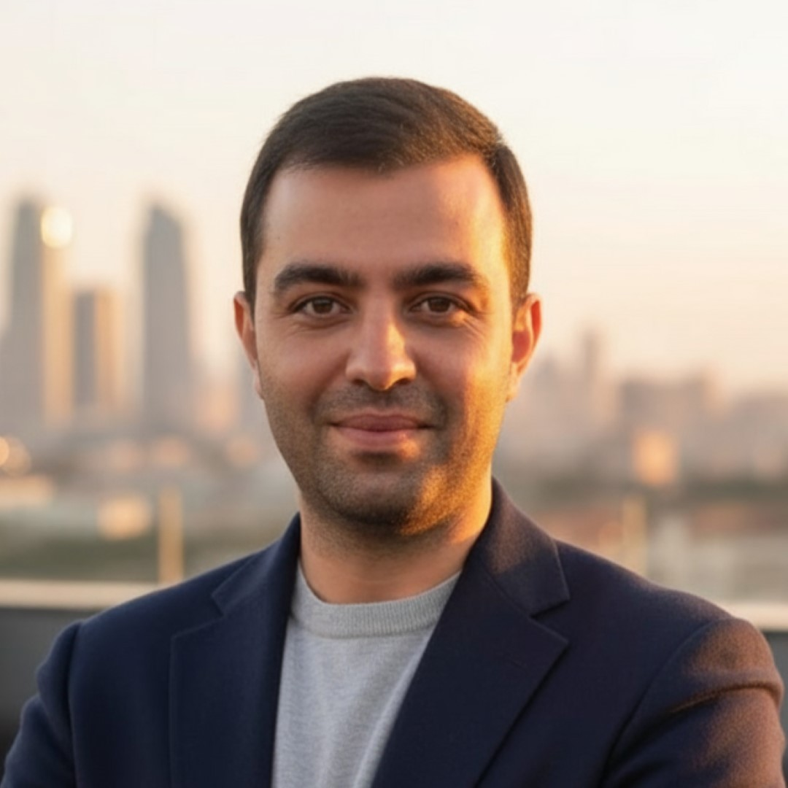

// About Me
I'm someone who takes ownership seriously — organized, committed, and comfortable juggling multiple priorities without losing focus.

With over 13 years of professional experience, I've built and shipped software across energy systems, cybersecurity platforms, education tech, and enterprise work management tools. I care deeply about writing maintainable code, designing scalable architectures, and creating environments where teams can do their best work.
I thrive in collaborative environments and find that diverse teams often bring out the best ideas. Whether I'm leading agile ceremonies as a Scrum Master, mentoring junior engineers, or debugging a production issue at midnight — I bring the same level of care and focus.
Practices & Methodologies
Technical Proficiency
Education
Teaching Assistant in Java Programming — instructed classes, prepared quizzes and assessments, and attended exams as an observer.